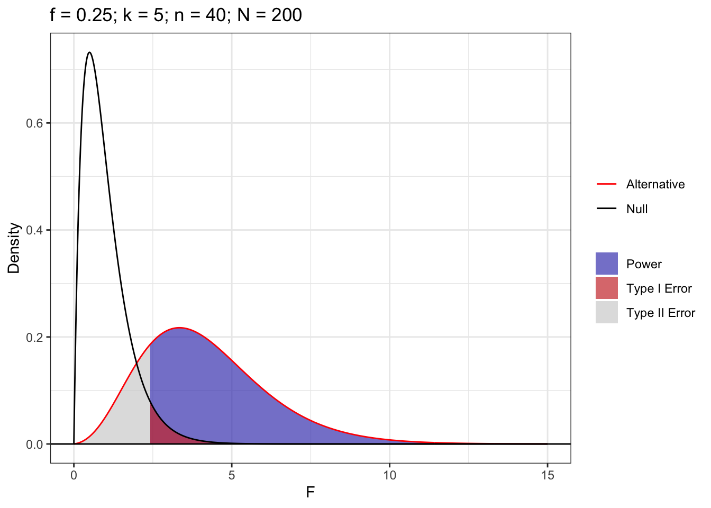
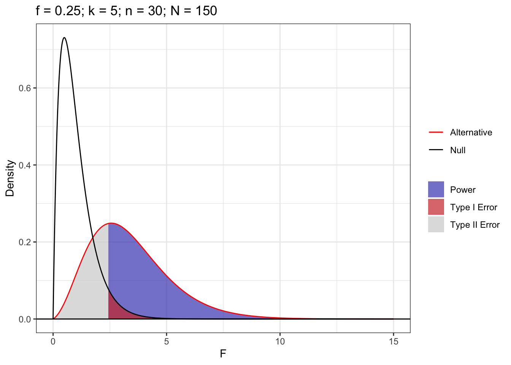
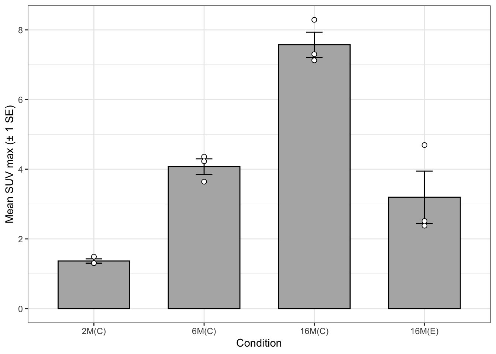

1 Question 1: Why do we Correct for Multiple Comparisons?
A student asked me what the point of correcting for multiple comparisons was. They made a two interesting points:
They are different outcomes, so, unlike the coin flip example (where the coin is the same) it doesn’t makes sense to combine them.
If a manuscript presented three studies with \(t\)-tests, they don’t correct for multiple comparisons across those tests.
When we conduct all pairwise comparisons after an omnibus test like ANOVA, we are testing a single family of hypotheses to answer one overarching question (“Which of these groups are different?”). Every additional test provides another opportunity to commit a Type I error from random noise. Similar to the coin, the probability of making at least one false error across \(J\) independent tests grows exponentially: \(1 - (1 - \alpha)^J\). Note that our pairwise comparisons are not independent, so it’s slightly different.
We don’t correct for inferences across separate studies because they typically test distinct hypotheses using independent samples. Our attempt to address the multiple comparisons problem is specifically confined to the issue of increased Type I error within a single decision-making context. If we don’t, we can find ourselves in a \(p\)-hacking-like situation, where an investigator might search through many tests to find one \(p < 0.05\) (a potential false discovery), rather than making decisions to best position themselves for finding a true discovery.
Here, we will quickly demonstrate why we correct for the multiple comparisons problem when conducting several tests to answer the same question.
1.1 Part a
Complete the following steps in \(R=1000\) simulations.
Simulate data for \(k=5\) samples \(n=30\) drawn from a standard Gaussian distribution.
Use pairwise.t.test(..., p.adjust.method="none") to compute unadjusted pairwise \(t\)-tests and record if any comparison yields statistically discernible support for a non-zero mean.
Use rstatix::tukey_hsd(...) to compute the Tukey’s HSD adjusted pairwise tests and record if any comparison yields statistically discernible support for a non-zero mean.
Since for every test there are \(\binom{5}{2} = 10\) p-values, over \(1000\) there are \(10000\) total p-values calculated. By the definition of significance, we expect a false positive rate of \(.05\), given our roughly \(500\) false positives under the ttest, this is what we’d expect. Still, it’s quite a few false positives, roughly \(5 \times\) what we get from the Tukey HSD.
1.2 Part b
Redo the simulation, changing to adjust according to the false discovery rate p.adjust.method="BH" and comment on the differences.
After adjusting, the adjusted false positive rate is much more similar to the Tukey HSD.
2 Question 2: Power Analyses
Revisit the MFAP4 study from class.
2.1 Part a
Assume the researchers were targeting a moderate effect size of Cohen’s \(f = 0.25\), setting significance level \(\alpha = 0.05\) and desired power \(1 - \beta = 0.80\). Were they adequately powered?
Note: The actual effect size is \(f=0.55\), but researchers usually do not know that ahead of time and defaulted to moderate, instead of specifying a large effect.
What is the required sample size per group (\(n\)) and the overall total sample size (\(N\))? Write the R code using the pwr package to calculate this sample size. This package assumes all samples are of the same size so \(N=nk\), where \(k\) is the number of samples. Note that the best answers will have a corresponding graphical display.
Yes, All samples in the group were larger than the minimum per group sample size of 40. The total minimum sample size is 200.
Code
power_plot =function(n,k,f,alpha) { N = k * n df1 = k -1 df2 = N - k noncentrality = f^2* N # noncentrality parameter (Cohen's f) crit =qf(1- alpha, df1, df2) # critical F value x =sort(c(seq(0, 15, length.out =1000), crit)) # include crit so shading meets exactly dat =data.frame(x = x,null =df(x, df1, df2),alt =df(x, df1, df2, ncp = noncentrality) ) low =subset(dat, x <= crit) high =subset(dat, x >= crit)ggplot(dat, aes(x)) +geom_ribbon(data = low, aes(ymin =0, ymax = alt, fill ="Type II Error"), alpha =0.7) +geom_ribbon(data = high, aes(ymin =0, ymax = alt, fill ="Power"), alpha =0.7) +geom_ribbon(data = high, aes(ymin =0, ymax = null, fill ="Type I Error"), alpha =0.7) +geom_line(aes(y = alt, color ="Alternative")) +geom_line(aes(y = null, color ="Null")) +geom_hline(yintercept =0) +scale_color_manual(name =NULL,values =c(Alternative ="#FF0000",Null ="#000000" ) ) +scale_fill_manual(name =NULL,values =c("Power"="#4747bb","Type I Error"="#cd3737","Type II Error"="#D3D3D3") ) +guides(color =guide_legend(order =1),fill =guide_legend(order =2)) +labs(title =sprintf("f = %.2f; k = %d; n = %d; N = %d", f, k, n, N),x ="F", y ="Density" ) +theme_bw() }(power_plot(n=40,k=5,f=.25,alpha=.05))
Figure 1: Power Analysis Of Minimally Powered Sample Size

2.2 Part b
The project was funded by several agencies. Suppose that a funding agency suggested funding limiting the researchers to \(N=150\). Evaluate this suggestion in the context of the ANOVA. Would that be large enough to be adequately powered?
Compute the non-centrality parameter \[\lambda = k \cdot n \cdot f^2\] and use the non-central \(F\) distribution to compute the power under \(H_a\) for Cohen’s \(f = 0.25\). Calculate the statistical power achieved under this budget constraint. Note that the best answers will have a corresponding graphical display.
Given the standard power target of \(.8\), the experiment with only \(150\) total participants would be underpowered.
Code
power_plot(n=30,k=5,f=.25,alpha=.05)
Figure 2: Power Analysis of Under Powered Sample Size

2.3 Part c
In the article the researchers state:
However, the statistical power was not sufficient to allow an accurate discrimination of no to moderate stages of hepatic fibrosis (F0–F2) from severe fibrosis and cirrhosis (F3 and F4).
The European Association for the Study of the Liver (EASL) provides treatment recommendations based on these stages.
Stages 0-1: Treatment is deferred with regularly assessment
Stage 2: Treatment is justified for those in stage 2
Stage 3-4: Treatment is a priority for those in stages
Suppose the researcher wanted to perform a follow-up test where they want to ensure adequate power not just for the overall ANOVA \(F\)-test, but specifically to detect a pairwise differences between stages 1 and 2. Explain why the sample size computed in Part a may not be enough and use PMCMRplus::power.tukey.test() to compute a sample size that attains adequate power.
Note: The researchers would have had to do this a priori. Because we aren’t medical experts, you can use sample estimates using the original data. \[\begin{align*}
n & = \text{answer from part a}\\
\mu_{\Delta} & = 0.25 \\
\sigma^2_{\text{pooled}} & = \frac{(176-1)0.85^2 + (135-1)0.84^2}{176+135-2} = 0.7152\\
\sigma_{\text{within}}= 0.77
\end{align*}\]
Solution
Intuitively, the probability of detecting some difference between an arbitrary number of means is greater than the probability of detecting a specific difference between two means. This follows from the idea that finding any difference in an arbitrary number of means is equivalent to multiple pairwise comparisons, while finding the difference between two specific means is only one such comparison.
Code
n =40power =0while (power < .8) { power = PMCMRplus::power.tukey.test(n = n,groups =2,delta = .25,within.var = .77^2 )$power n = n +1}(n -1)
[1] 150
Given two groups, assuming a true difference in means of \(.25\) and within group variance of \(.5929\), the minimum number of observations per group to be sufficiently powered \((.8)\) is \(150\). We can’t immediately expand this to the total sample size, as if the researchers were interested in pairwise comparisons between other groups, the within group variance and true difference in means might vary.
2.4 Part d
How does the answer to Part c change if they wanted to have adequate power for all pairwise comparisons? Use Superpower::ANOVA_design() to set up the ANOVA set up.
Note: Use design “5b” and the following. \[\begin{align*}
\boldsymbol{\mu} &= \{2.92, 3.11, 3.36, 4.04, 4.35\}\\
\sigma^2 &= \frac{(97-1)0.87^2 + (176-1)0.85^2 + (135-1)0.84^2 + (67-1)1.00^2 + (67-1)0.90^2}{97+176+135+67+67-5} = 0.80
\end{align*}\]
Compute the power of the researcher’s design (part a) using Superpower::ANOVA_power(). If the researchers were able to oversample by double, a common approach to addressing this issue, would their power be at least 80% for all pariwise comparisons?
Note: This code can take a minute. You may want to set cache: true in your R chunk yaml header. You will also see more power because the actual effect size was 0.55.
Given the total sample size of \(200\) computed in part a, even after doubling the total sample size to \(400\), the test would still be very underpowered.
3 Question 3: An Application
Yang et al. (2023) investigate whether low-dose nicotine can counteract age-related metabolic decline. The proposed mechanism is through \(\text{NAD}^+\), which is a chemical compound essential for metabolic energy production. The idea is that low-dose nicotine could help improve and/or maintain the recycling of \(\text{NAD}^+\) by activating the salvage enzyme NAMPT via SIRT1. This could, in turn, restore \(\text{NAD}^+\) homeostasis, which is the biological balance maintained within a cell between the production, recycling, and degradation of nicotinamide adenine dinucleotide (\(\text{NAD}^+\)).
Note: It is low-dose nicotine. Cigarette smoking delivers massive doses of nicotine along with other harmful chemicals. This is not an endorsement for smoking.
Male mice across distinct life stages – 2, 6, and 16 months – were categorized to evaluate natural, age-dependent metabolic and enzymatic shifts in two conditions.
Treatment: low-dose nicotine (administered in drinking water)
Control: no-dose placebo (administered in drinking water)
The researchers then aimed to compare treatment against control in the following samples:
2 months old, control
6 months old, control
16 months old, control
16 months old, treatment
Using PET imaging, the researchers measured age-induced inflammatory glucose hypermetabolism (\(\text{SUV}_{\text{max}}\)). They want to show that this quantity increases with age and those in the nicotine group saw levels comparable to younger mice.
Table 1: \(\text{SUV}_{\text{max}}\) measurements in the heart across age and treatment groups
Replicate
2M
6M
16M
16M, Treatment
1
1.48969
4.36000
7.30182
4.69304
2
1.30168
4.28807
7.12416
2.51326
3
1.30620
3.64184
8.28764
2.38019
3.1 Part a
State the null (\(H_0\)) and alternative (\(H_a\)) hypotheses for the omnibus test.
plot_dat = summary |>mutate(se = sd /sqrt(n))ggplot(plot_dat, aes(x = groups, y = mean)) +geom_col(fill ="grey70", colour ="black", width =0.65) +geom_errorbar(aes(ymin = mean - se, ymax = mean + se), width =0.15) +geom_point(data = dat, aes(x = groups, y = x),shape =21, fill ="white", size =2) +labs(x ="Condition", y ="Mean SUV max (± 1 SE)") +scale_x_discrete(limits = groups) +theme_bw()
Figure 3: SUV max by Condition

3.3 Part c
Perform and report the results of the omnibus test. Make sure to evaluate the conditions for using the method you choose.
Solution
Given the observed differences in standard deviation, and the plasible enough mechanistic argument that we observe more variation in populations as they age due to compounding effects of aging over time, the violation of constant variation across groups for Anova is potentially violated, and as such we proceed with Welch’s Anova. Since different mice are used at each age, there’s no concern of dependence across time, and otherwise we expect individual mice to be independent. Lab mice are also genetically engineered to be highly similar, so representativeness with respect to the population of lab mice is also reasonable. As mentioned in the paper, the sample size of \(3\) per group is too small to make any argument for or against normality. This is a big concern, but it’s also plausible that researchers with domain specific knowledge have some good reasons to suggest that the distribution of these markers should be approximately normal. Thankfully, ANOVA and Welch’s ANOVA are somewhat robust to only a violation of normality, so we are not greatly concerned for the validity of the subsequent analysis.
Code
wanova.test = rstatix::welch_anova_test(dat, x ~ groups)(wanova.test$p)
[1] 0.000658
Given a p-value of \(.000658\), we report statistically significant support for the alternative hypothesis.
3.4 Part d
Conduct post-hoc pairwise comparisons to determine if age-induced inflammatory glucose hypermetabolism increase with age and whether low-dose nicotine reduces age-induced inflammatory glucose hypermetabolism.
Solution
Given that our choice of omnibus depended on the violation of the assumption of equal variance, we additionally perform post-hoc testing with the Games-Howell test as it continues this relaxation. Analytically this manifests as a modification of the standard error estimate used in the construction of Tukey’s HSD.
As seen in Figure 4, we have statistically significant support for the difference in biomarker across control ages. The positive sign of these differences and the relative magnitudes are consistent with the idea that the marker is present at higher levels as mice age. With respect to the experimental results, exposure to the experimental condition leads to no statistically significant differences between \(16\) month old mice and both \(2\) and \(6\) month old mice, as well as significant differences from the control population of \(16\) month old mice. This is a significant evidence suggesting that the experimental condition makes mice younger than their age-peers, and statistically indistinguishable from younger mice with respect to the biomarker of interest. As shown in Table 3, the effect size is large for all comparisons except for the difference between the 16 month old experimental condition and the 6 month old control condition, in which the effect size is medium.
3.5 Part e
Write a short paragraph directly addressing the researcher’s hypothesis using your work in (a)-(d).
The researchers in Yang et al. (2023) are interested in whether nicotine can combat age related metabolic decline. They observe a metabolic biomarker that is known to increase in age across 3 populations of mice: 2 month, 6 month, and 16 month old. The researcher assign the experimental condition to one population of 16 month old mice, and another is left as a control. Using the collected data on the 4 groups of 3 mice per group, we perform Welch’s ANOVA and post-hoc Games-Howell tests. We presume independence of samples and population representativeness given limited domain-specific knowledge. We acknowledge the sample size is insufficient to justify normality give observations of the sample data. We use Welch’s anova and Games-Howell tests specifically because of evidence of violations of the assumption of constant variance across samples as shown in Figure 3. We report significant support for our omnibus analysis, suggesting there exists some difference across means. We follow up with post-hoc testing as seen in Figure 4 showing that while 16 month old mice in the control population have a discernibly higher lever of the biomarker of interest, 16 month old mice in the experimental population are not statistically discernible from younger mice, and have a discernibly lower level of the biomarker from the 16 month old mice in the control population. Using our effect size results in Table 3, two differences between the experimental and control conditions had a large effect size, while one difference had a medium effect size. Given the statistical analysis, we conclude that the data offers evidence in favor of the affirmative answer to the broader research question proposed in Yang et al. (2023)
4 AI Use Apendix
Given the power plot from lecture as input, I prompted Claude to generate the R code necessary to replicate the plot. I refactored the output into a function.
I skimmed the paper and found graphics similar to the exploratory data analysis presented above. I thought it was particularly useful given the small sample sizes. I prompted Claude to produce the plotting code needed to replicate the figure.
References
Yang, Liang, Junfeng Shen, Chunhua Liu, et al. 2023. “Nicotine Rebalances NAD+ Homeostasis and Improves Aging-Related Symptoms in Male Mice by Enhancing NAMPT Activity.”Nature Communications 14 (1): 900.